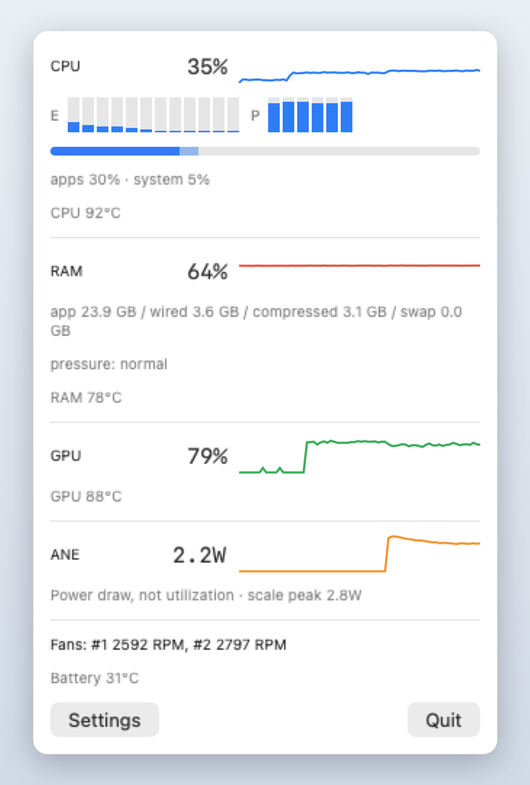

A system monitor for Apple Silicon Macs, in the menu bar. Processor and memory, graphics, Neural Engine, temperatures and fans.

One click on the menu bar shows the last ten minutes of everything.
| Processor | Load split into applications and system, with a bar for every core - efficiency and performance clusters shown apart. |
|---|---|
| Memory | App, wired, compressed and swap, plus the memory pressure state macOS itself uses to decide when things are getting tight. |
| Graphics | How busy the GPU cores are. |
| Neural Engine | Power draw in watts. macOS publishes no utilisation figure for it, so SiMon reports what the engine is actually drawing and says so plainly. |
| Temperatures | Processor, graphics, memory and battery, read from the hardware. Sensors differ between chips, so SiMon asks yours what exists and shows only what answers. |
| Fans | Current speed, shown as "off" when the fans are genuinely stopped - which on a cool Mac they usually are. |
Readings that a given Mac cannot provide are simply absent rather than filled with plausible-looking numbers. There is no network code in the app at all: no analytics, no accounts, no background updates. Every reading comes from the machine it runs on and stays there. See the privacy policy.
This site carries the full version, with every metric listed above and the built-in stress test. SiMon is also on the Mac App Store, where the sandbox rules out the sensors that require direct hardware access - that copy shows the processor, memory, graphics and a single die temperature.